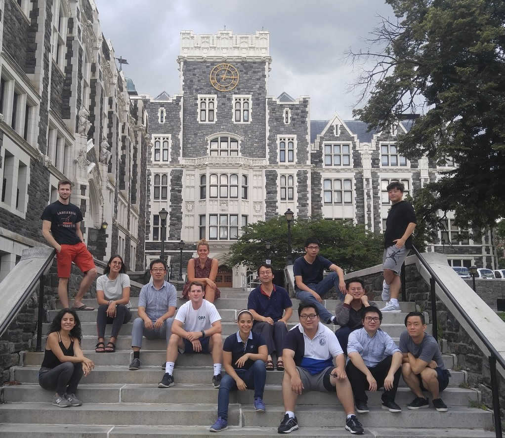
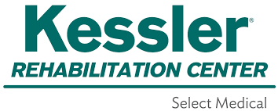

About Omni Exosuit
We are a team of students working on affordable soft exosuits from the Department of Mechanical Engineering at the City University of New York, City
College, the Lab of Biomechatronics and
Intelligent Robotics (BIRO). Exoskeletons can help 200M people with lower limb impairments to improve health. But current exoskeletons are rigid and expensive. We have developed low-cost soft exosuits that are made of fabrics actuators. The robot uses fabric sensors to monitor gaits and controls the robot.

Members
Lizzette Salmeron, Manager of Senior Design Capstone Project, BIRO Lab, ME Dept., CCNY.
Lizzette is a graduating senior majoring in Electrical Engineering at The City College of New York. She has an extensive interest in robotics and power engineering. Lizzette is currently working as a Research Assistant at the Smart Grid Interdependencies Laboratory and decided to focus her senior design capstone project on a project outside of her research scope and explore the mechanical and electrical engineering applications in robotics with the BIRO Lab. In her project she accomplished:
Gladys V. Juca Castro, Member of Senior Design Capstone Project, BIRO Lab, ME Dept., CCNY.
Publications
- Keyvan Alonso, Leonardo Baraldi, Ahmed Chowdhury, Soham Gaggenapally, Sebastian Gonzalez, David Tran, Shuangyue Yu, Xiaolong Yang, Hao Su, “Untethered High Force Hydraulic Artificial Muscles for SoftWearable Robots”, Opportunities and Challenges in Soft Robotics Across Length Scales, IEEE International Conference on Robotics and Automation 2019
- Shuangyue Yu, Hadia Perez, James Barkas, Mohamed Mohamed, Mohamed Eldaly, Tzuhao Huang, Xiaolong Yang, Hao Su, Maria del Mar Cortes, Dylan J. Edwards, “A Soft High Force Hand Exoskeleton for Rehabilitation and Assistance of Spinal Cord Injury and Stroke Individuals,” Design of Medical Devices Conferences (DMD), Minneapolis, 2019.
- Tzuhao Huang, Jianfu Yang, Eljona Pushaj, Viktor Silvanov, Shuangyue Yu, Xiaolong Yang, Hao Su, Shuo-Hsiu Chang, Gerard Francisco, “Soft Physiology Sensors and Machine Learning to Enhance Spinal Cord Injury and Stroke Rehabilitation Outcomes in Home Settings,” Design of Medical Devices Conferences (DMD), Minneapolis, 2019.
- Jianfu Yang, Tzuhao Huang, Shuangyue Yu, Xiaolong Yang, Hao Su, Ann M. Spungen, Chung-Ying Tsai, “Machine Learning Based Adaptive Gait Phase Estimation Using Inertial Measurement Sensors,” Design of Medical Devices Conferences (DMD), Minneapolis, 2019.
- Satesh M. Mahadeo, Tzuhao Huang, Artur Zyc, Diar Sanakov, Shuangyue Yu, Hao Su, “A Smart Cooling Vest for People with Thermoregulatory Disorder”, Design of Medical Devices Conferences (DMD), Minneapolis, 2019.
- Justin Yuen, Kevin Nogacz, Yen Cheng Chi, Fahmida Ferdousi, Shuangyue Yu, Tzuhao Huang, Guang Yue, Hao Su, “The Oxeous Back-Support Exoskeleton: Soft, Active Suit to Reduce Spinal Loading”, Design of Medical Devices Conferences (DMD), Minneapolis, 2019.
- Eljona Pushaj, Varinder Singh, Abdul Shohatee, Mohammed Babu, Hao Su, Tzuhao Huang, “Soft Ankle Exoskeleton for Gait Assistance of Children with Cerebral Palsy in Home Settings,” Design of Medical Devices Conferences (DMD), Minneapolis, 2019.
Clinical Partner
